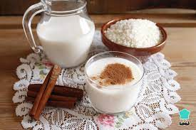

Agua de horchata

Descripción
Receta para saber cómo preparar agua de horchata.
Ingredientes
- 2 litros de agua
- 1 taza de arroz
- 4 rajas de canela
- 1 lata de leche evaporada
- 1/2 taza de azucar
Pasos
- Remoja en agua hirviendo el arroz y espera a que enfríe
- En una cacerola hierve las 2 tazas de agua con 2rajas de canela
y dejála enfríar
- Licúa el arroz con todo y agua, el agua con canela y un pedazo de ella
- Utilza un colador de malla fina para pasar lo licuado a una jarra grande, incorpora
leche evaporada al gusto hasta desear la consistencia deseada
- Agrega de 2 a 3 litros de agua y revúelve con azucar al gusto. Al final agrega hielos